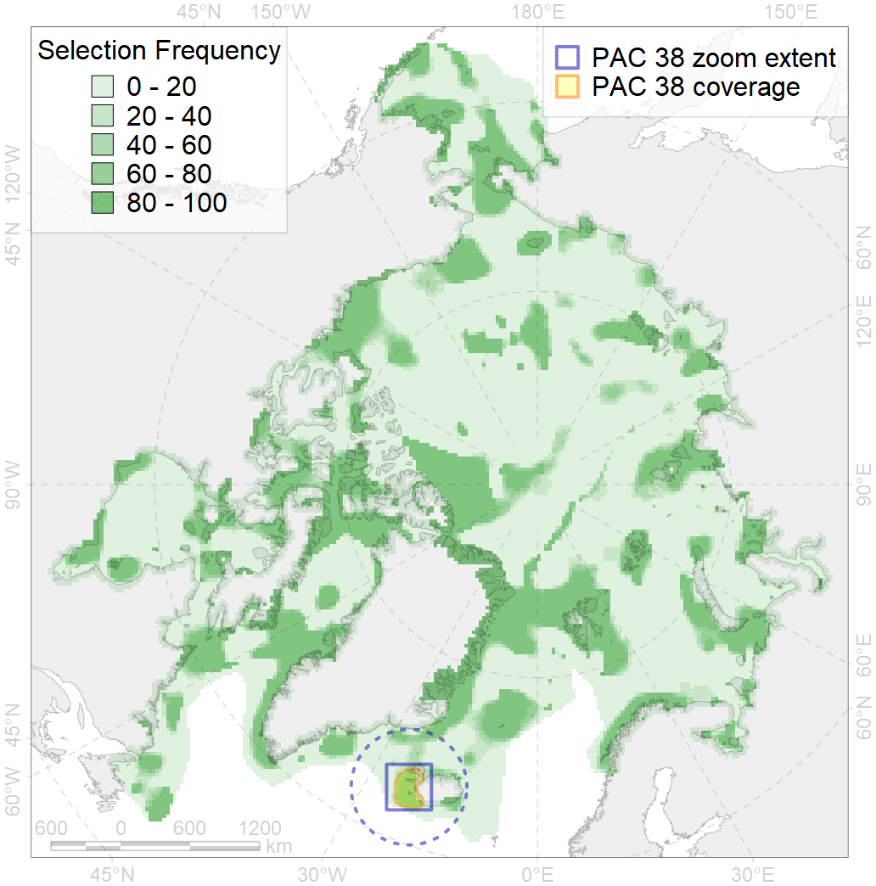
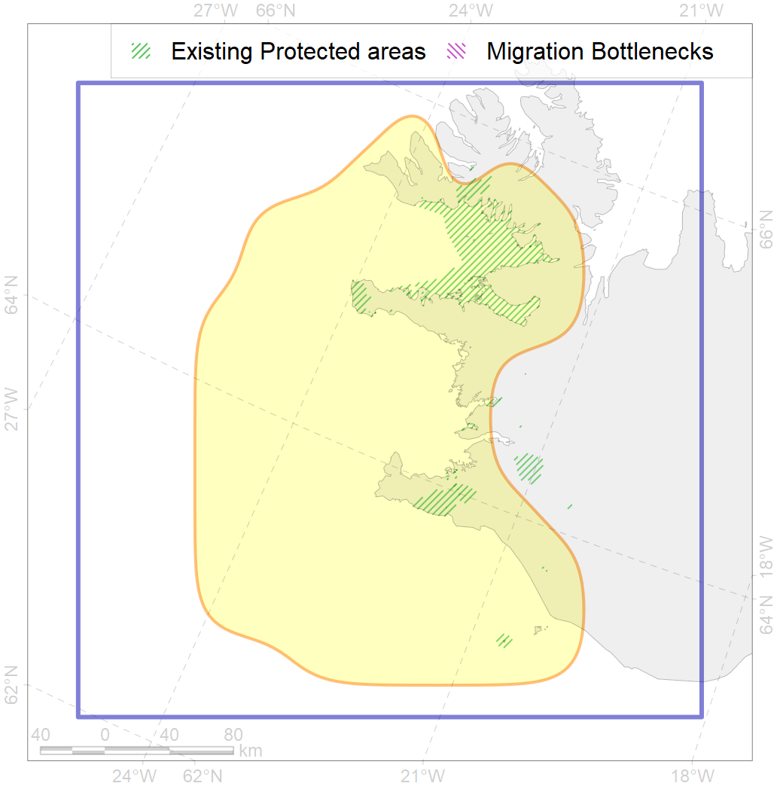

38
For more information regarding this PAC and to conduct custom spatial analysis using the PAC data or any spatial query, please consult Accenter.

0
CFs entirely within the PAC area
8
CFs at least 25% within the PAC area
10
CFs with their target entirely achieved in the PAC
20
CFs with at least 50% of their target achieved in the PAC
| CF ID | CF Name | Proportion in the PAC | Conservation Target | Contribution to ArcNet Target Achievement | PAC’s Contribution to the Achieved Target |
|---|---|---|---|---|---|
| 7248 | Seagrasses, Iceland | 80.0% | 30.0% | 169.1% | 87.3% |
| 6060 | Common eider (Somateria mollissima borealis) breeding / moulting grounds, Iceland | 51.2% | 55.2% | 66.5% | 63.7% |
| 7226 | Kelp forests, Iceland | 50.3% | 15.0% | 193.6% | 67.6% |
| 7212 | Benthic communities, V.2.1. South Iceland shelf and glacial troughs | 49.3% | 11.2% | 375.4% | 71.1% |
| 6054 | Common eider (Somateria mollissima borealis) wintering grounds, Iceland | 47.0% | 55.2% | 61.3% | 58.1% |
| 7054 | Cold water coral communities, Iceland and Eeast Greenland | 41.1% | 50.0% | 77.7% | 75.5% |
| 6086 | Long-tailed duck (Clangula hyemalis) moulting / migration stopovers, Iceland | 30.3% | 52.8% | 47.6% | 46.7% |
| 4069 | Atlantic herring (Clupea harengus) spawning grounds | 29.9% | 6.0% | 443.2% | 66.5% |
| 5055 | Harbour porpoise (Phocoena phocoena) feeding grounds, Iceland | 23.8% | 6.0% | 332.3% | 52.3% |
| 4082 | Fish communities, Low-boreal Zoogeographic District, Eastern Atlantic Subregion, Atlantic Boreal Region | 22.3% | 6.7% | 285.8% | 69.2% |
| 6075 | Common murre (Uria aalge aalge) breeding colonies | 21.5% | 54.0% | 37.9% | 36.0% |
| 7029 | Benthic communities, Iceland Zoogeographic region | 19.9% | 14.9% | 112.2% | 50.5% |
| 7213 | Benthic communities, V.2.2. South Iceland slope | 16.5% | 13.9% | 105.7% | 77.7% |
| 4086 | Fish communities, Iceland Zoogeographic District, Subarctic Transitional-Atlantic Province, Arctic Region | 14.5% | 20.0% | 56.7% | 34.6% |
| 5066 | Minke whale (Balaenoptera acutorostrata) feeding grounds, central North Atlantic | 14.0% | 12.0% | 98.6% | 29.5% |
| 6047 | Black-legged kittiwake (Rissa tridactyla pollicarius) breeding colonies | 13.1% | 64.8% | 17.4% | 15.0% |
| 6101 | Common murre (Uria aalge aalge) breeding colonies foraging range buffer | 11.9% | 36.0% | 28.2% | 19.9% |
| 2017 | Grey seal (Halichoerus grypu) home range | 11.8% | 6.0% | 166.1% | 23.4% |
| 7209 | Benthic communities, V.1.1.1. North Iceland medium and low profile shelf | 11.8% | 13.7% | 68.7% | 31.6% |
| 5059 | Humpback whale (Megaptera novaeanglia) summer feeding grounds, East Greenland and Iceland | 8.7% | 12.0% | 54.4% | 18.3% |
| 5098 | White-beaked dolphin (Lagenorhynchus albirostris) feeding grounds, central North Atlantic | 8.6% | 12.0% | 64.2% | 21.2% |
| 7208 | Benthic communities, V.1.1. North Iceland shelf | 8.6% | 17.0% | 34.8% | 23.0% |
| 4068 | European eel (Anguilla anguilla) migration range | 8.0% | 24.0% | 29.5% | 16.1% |
| 5048 | Fin whale (Balaenoptera physalus) summer feeding grounds, East Greenland and western Iceland | 6.8% | 26.4% | 21.9% | 21.8% |
| 5064 | Orca (Orcinus orca) summer feeding grounds, eastern North Atlantic | 6.5% | 6.0% | 96.2% | 16.1% |
| 5037 | Blue whale (Balaenoptera musculus) summer feeding grounds, eastern North Atlantic | 5.1% | 25.2% | 17.4% | 13.2% |
| 6106 | Thick-billed murre (Uria lomvia lomvia) breeding colonies foraging range buffer | 4.0% | 48.0% | 7.0% | 5.2% |
| 4054 | Shorthorn sculpin (Myoxocephalus scorpius), European populations, home range | 3.7% | 3.0% | 103.7% | 7.6% |
| 4030 | Arctic charr (Salvelinus alpinus), European anadromous populations, feeding grounds | 3.4% | 38.4% | 7.8% | 6.8% |
| 4027 | Atlantic salmon (Salmo salar), European populations, feeding / migration grounds | 3.1% | 20.4% | 12.6% | 8.6% |
| 6076 | Common murre (Uria aalge aalge) wintering grounds | 2.6% | 18.0% | 12.3% | 6.6% |
| 2019 | Harbour seal (Phoca vitulina) home range, North Atlantic | 2.5% | 6.0% | 34.5% | 5.2% |
| 4057 | American plaice (Hippoglossoides platessoides), American populations, home range | 2.3% | 3.0% | 64.0% | 5.8% |
| 4049 | Haddock (Melanogrammus aeglefinus) home range | 2.2% | 6.0% | 31.7% | 5.0% |
| 6049 | Black-legged kittiwake (Rissa tridactyla tridactyla) winter grounds | 2.2% | 32.4% | 5.7% | 5.7% |
| 6023 | Atlantic puffin (Fratercula arctica naumanni) winter grounds | 1.9% | 24.0% | 6.7% | 5.5% |